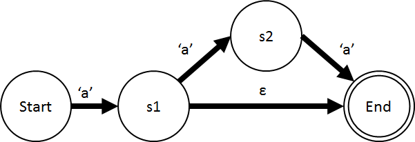
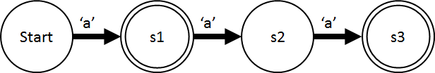

This documentation is meant to provide an introduction into understanding the Poodle-Lex source code for anyone who wishes to develop for, borrow from, or simply learn about the application.
Poodle-Lex is written in Python. To run Poodle-Lex from source, install the following dependencies
Once all dependencies have been acquired, clone the Poodle-Lex repository using git:
git clone https://github.com/parkertomatoes/poodle-lex.git
Create a folder to hold the source and navigate to it in a command prompt or terminal. Then run __main__.py using Python:
mkdir Output
python __main__.py Example/SimpleLexer/SimpleLexer.rules Output
Poodle-Lex consumes a rules file containing regular expressions and produces source code which can accept strings and match them to rules. It does this though a series of steps which are a well known part of compter science.
Source file: Generator/LexicalAnalyzerParser.py
Before creating a lexical analyzer, Poodle-Lex parses a rules file to obtain a list of rules and variables.
The parser is a hand-made recursive descent parser which uses the output of re.finditer as a lexical analyzer. The parser is an iterator generator which yields both rules and variable definitions.
The parser is only accessed through the static method LexicalAnalyzer.parse(), which takes in a filename and outputs a LexicalAnalyzer() structure.
Source files:
Once the rules file is parsed into a list of rules and variable definitions, each regular expression is represented with a string. To be usable, the string is parsed into an visitable abstract tree representing the reglar expression. Each object in the tree is either a set of characters or a relationship between other tree elements:
For example, "cat+|dog" is parsed into the following structure:
Like the rules file parser, the regular expression parser is a hand-made recursive descent parser. It takes in individual characters as its terminals. Because of this, a dedicated lexical is not necessary.
Source files:
Before the regular expression is converted to code, it must be converted into a non-deterministic finite automaton (NFA). An NFA is a state machine which has one start state and one end state, and an be in more than one state at a time. NFA's are difficult to simulate on a CPU, but easy to generate from a regular expression.
Poodle-lex converts regular expressions to NFAs using the Thompson Construction algorithm, sometimes called subset construction. General information about NFAs and Thompson construction are beyond the scope of this document, but there is abundent information about these topics. See the resources below for more information:
NFAs are stored in Poodle-Lex using the NonDeterministicFiniteAutomata class. This class does little except to point to the start and end states of the class. The states, each represented by a NonDeterministicState object, define most of the structure of the NFA.
Each state contains four main components:
For example, consider the following NFA, which matches 'a' or 'aaa':
This state machine can be created with the following Python code:
# Value of an edge 'a'
a = CoverageSet([(ord('a'), ord('a'))])
# State machine and states
state_machine = Automata.NonDeterministicFiniteAutomata()
s1 = Automata.NonDeterministicState()
s2 = Automata.NonDeterministicState()
# Edges
state_machine.start_state.edges[s1] = a
s1.edges[s2] = a
s1.epsilon_edges.add(state_machine.end_state)
s2.edges[state_machine.end_state] = a
Thompson Construction is relatively simple. Once a regular expression is broken down into parts (Alternation, Concatenation, etc), each part can be substituted for an equivalent NFA representation. Different representations are chained together with epsilon edges.
To recursively iterate though the regular expression tree structure, Poodle-Lex makes use of a visitor class to act differently on different types of tree elements, the NonDeterministicFiniteAutomata class. This class visits the root of the tree, and first visits the children of each node, pushing their equivelent NFA onto a stack. Then the children are popped off the stack and merged using static helper methods such as Alternate and Concatenate. Because visiting each child means the entire tree is visited, visiting the root of the tree results in an NFA equivalent to the entire regular expression.
Multiple regular expression "rules" can be merged into a single NFA by simply alternating the individual NFAs for each rule, which is the equivalent of the regular expression "{rule1}|{rule2}|{rule3}".
To keep track of which rule is which, the ids property of each NFA state is tagged with the name of the rule that the state originated from. The final_ids property for the final state is tagged with a rule name as well. When the states are combined later, the tags identify which rules are matched when the state machine is in the combined state.
Source files:
NFAs are not ideal for single-threaded CPU execution (though they are highly-parallel processors such as FPGAs), so Poodle-Lex next converts the NFA to a deterministic finite automata (DFA) A DFA is a state machine which can only be in one state at a time, and state transitions only occur due to input characters. In Poodle-Lex, they are represented by the DeterministicFiniteAutomata class.
The DeterministicFiniteAutomata class is equivalent to the NondeterministicFiniteAutomata class, except that there are no epsilon edges, and no unified end state. The class exists to point to a single DeterministicState object representing the start state. The DeterministicState object contains the same edges, ids, and final_ids fields as the NFA data structure. The only difference is that edges now points to other DeterministicState objects instead of NondeterministicState objects.
A populated final_ids property indicates that a given state is a final state. For instace, consider the following DFA. The DFA matches 'a' or 'aaa', like the NFA from the previous section. States with double outlines are final states.
This state machine can be created with the following Python code:
# Value of an edge 'a'
a = CoverageSet([(ord('a'), ord('a'))])
# State machine and states
state_machine = Automata.DeterministicFiniteAutomata()
s1 = Automata.DeterministicState()
s2 = Automata.DeterministicState()
s3 = Automata.DeterministicState()
s1.final_ids.add('rule')
s3.final_ids.add('rule')
# Edges
state_machine.start_state.edges[s1] = a
s1.edges[s2] = a
s2.edges[s3] = a
An NFA can exist in multiple states at once. To convert an NFA to a DFA, every combination of multiple NFA states the state machine can be in at one time must be found. Each combination of simultaneous states is then considered one DFA state. This process is called powerset construction and is described in more detail in other widely available resources.
Poodle-Lex performs this process by completely traversing the NFA, and finding the epsilon closure of each state the traverser is in. The epsilon closure of a set of NFA states is a set of all the states given, plus all the states reachable through epsilon edges. It finds all the simultaneous states a traverser can be in. Poodle-Lex uses a separate recursive crawler, the EpsilonClosureCrawler class, to find the epsilon closure for a set of states.
The DeterministicFiniteAutomataBuilder class is responsible for converting the NFA to a DFA. It starts by taking the epsilon closure of the start state of the NFA. Then, a DFA is created, and its start state is mapped to the epsilon closure.
The builder then traverses the NFA. For every new combination of states the builder is in, it expands the set to include the epsilon closure of those states. Then it creates a DFA state to represent that combination of states. This process gradually builds up the DFA as it traverses the NFA. When the NFA is completely traversed, and no new combinations of NFA states are found, the DFA is an equivalent state machine to the NFA.
When a DFA state is created from a set of NFA states, the values of ids and final_ids for the DFA state is the union of all the values of ids and final_ids of the NFA. This allows a DFA state to be matched to one or more rules.
Source files:
When a DFA is created from an NFA, there is enough information to create equivalent source code. But the source code may be inefficient. Before emitting source code, Poodle-Lex (and most similar programs) minimize the state machine to reduce the number of states.
A popular algorithm for minimizing a state machine is Hopcroft's Algorithm, which costs n*s*O(n)^2 iterations, where n is the number of states and s is the size of the input alphabet. Poodle-Lex, by default, minimizes the state machine using an implementation of this algorithm.
Poodle-Lex also includes a basic O(n^2) algorithm which compares each state to each state and merges them if they are equivalent. This implementation is several times slower, however, and only exists for demonstrative purposes and for internal unit testing.
Source files:
DFA state machines can be easily represented in most programming languages. Consider the state machine from previous sections:
This state machine can be represented with the following (badly written and not recommended) code:
int accept(FILE* f) {
start: if (fgetc(f) == 'a') goto s1;
else return FALSE;
s1: if (fgetc(f) == 'a') goto s2;
else return TRUE;
s2: if (fgetc(f) == 'a') goto s3;
else return FALSE;
s3: return TRUE;
}
The last step Poodle-Lex takes it to generate source code equivalent to the DFA. In order to maintain flexibility, Poodle-Lex relies on emitter plugins written in Python.
Emitter plugins are defined in Plugins/Plugins.json. The json file contains a list of plug-ins